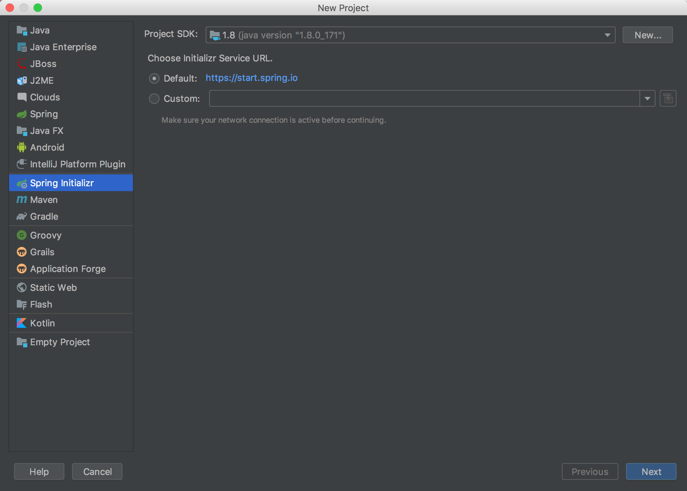
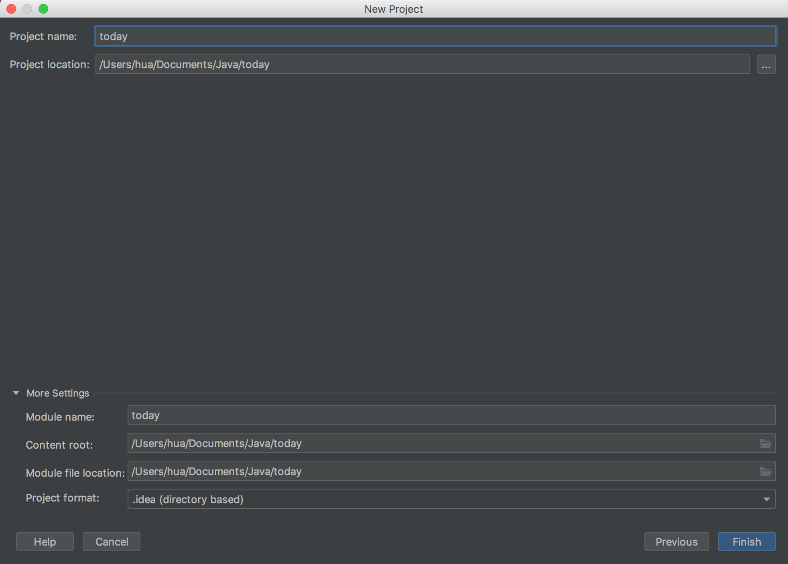
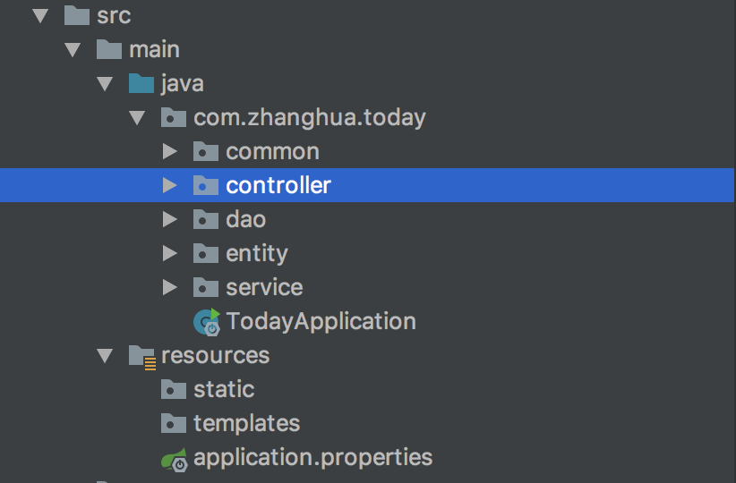
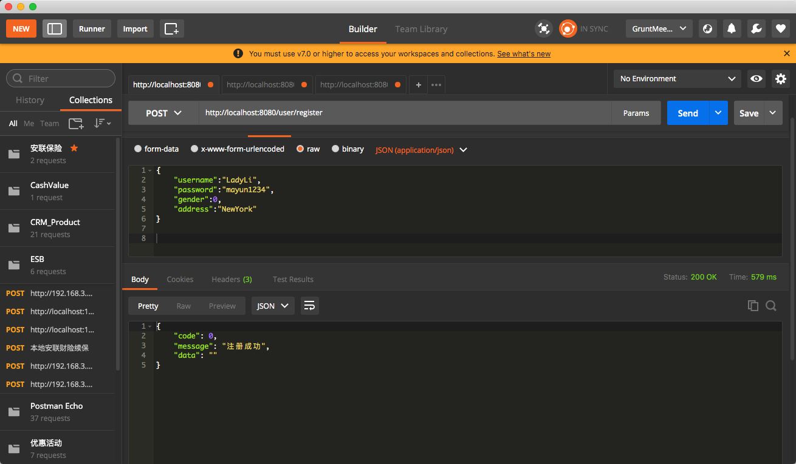
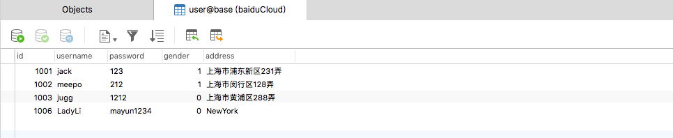

以前要开发Java后端程序，一般都是采用SSH或者SSM框架，要用到很多的配置文件，但是Spring Boot的出现，可以大大提高我们的开发效率，本文记录用Spring Boot大概用十分钟的时间写一套接口出来。
前置开发工具：
- IDEA（自己安装好JDK，配置好Java环境）
- Maven （管理依赖，打包项目）
- Mysql（使用Mysql读写数据）
- Postman（测试接口使用）
采用的工具框架
- SpringMVC
- Spring
- Mybatis
1,前置准备
1.1打开IDEA，创建一个Spring Boot项目

1.2填写公司信息，项目信息

1.3数据库建表，填写表字段
1 | SET NAMES utf8mb4; |

1.4,配置数据源
配置数据库地址，用户名和密码，这一步比较简单，不再赘述。
2，项目分层
采用SSM框架，即Spring + SpringMVC + Mybatis，经典的三层架构，表现层，业务层，持久层；

3，接口开发
controller里面代码：
1 |
|
service实现代码：
1 |
|
持久层代码：
1 | public interface UserMapper { |
公共接口返回类：
1 | public class Response { |
与数据库映射的实体类Entity：
1 | public class User { |
4，接口测试
启动项目，如果看到控制台有“Tomcat started on port(s): 8080 (http) with context path”字样输出，证明项目已经启动成功，用postman来测试接口
首次注册

查看数据库是否记录到数据

到这里使用Spring Boot写接口的简单演示就结束了，有时间补充一篇关于Mybatis原理，以及使用xml方式读写数据，以及多数据源配置方法。
5，其他问题
由于这是一个简单的演示项目，存在一些问题，比如：
- 注册之前没有邮箱或者手机号验证；
- 密码保存没有使用密文；
- 接口接收数据没有进行数据有效性的验证；
- mybatis中文官网